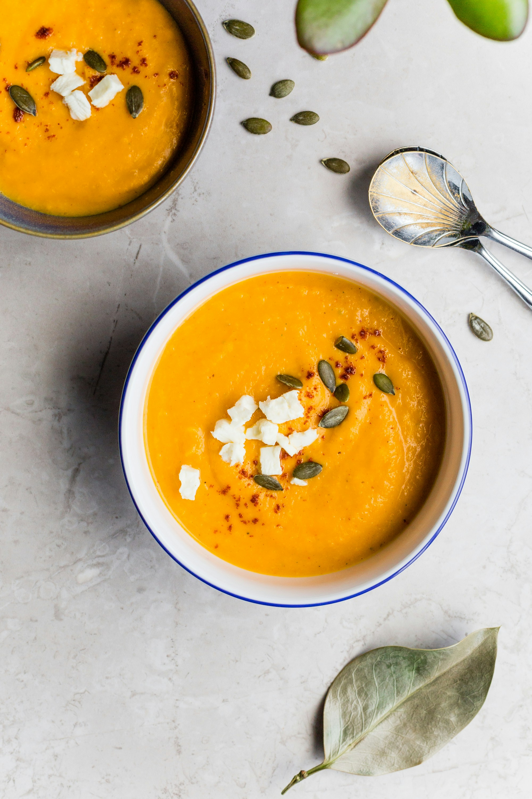

Home
Pumpkin Soup

Sweet and Creamy Pumpkin Soup
This pumpkin soup recipe is flavored with sautéed onions, garlic, and
thyme for depth, then blended with maple syrup and warm spices. It’s a
smooth, comforting soup we serve at Thanksgiving every year.
Ingredients
- 1 tbsp olive oil
- 2 cups chopped onions
- 10 whole black peppercorns
- 4 cloves garlic, minced
- 1 tsp chopped thyme
- 3 cups pumpkin puree
- 4 cups vegetable or chicken stock
- 3/4 tsp salt
- 1/4 tsp ground nutmeg
- 1/4 tsp ground cinnamon
- 1/2 cup heavy cream
- 2 tbsp chopped fresh parsley
Steps
-
Heat oil in a large pot over medium-high; add onion and cook, stirring
occasionally, until brown and soft, about 10 minutes. Add peppercorns,
garlic, and thyme. Cook, stirring often, until fragrant and slightly
brown, about 2 minutes.
-
Stir in pumpkin puree; cook, stirring occasionally, until puree turns a
few shades darker, about 5 minutes. Stir in stock, maple syrup, salt,
nutmeg, and cinnamon. Simmer, uncovered, on medium-low heat, stirring
occasionally, until slightly reduced, about 30 minutes.
-
Transfer soup to a blender in batches; secure lid (hold down with a
kitchen towel), and blend until smooth, about 30 seconds per batch.
-
Return soup to the pot; stir in heavy cream. Cook over medium heat until
heated through, about 4 minutes.
- Ladle soup into bowls and garnish with fresh parsley.